A complete guide to obtaining your eKhata online for Gram Panchayat limit properties in Karnataka — no agent required.
An E-Khata (eKhata) is a digitally issued property ownership certificate by the Karnataka government for properties that fall under Gram Panchayat limits. It is now generated online through the E-Swathu 2.0 portal, managed by the Rural Development and Panchayat Raj Department (RDPR), Government of Karnataka.
E-Khata is mandatory for property tax payment, sale/purchase of land, obtaining bank loans, building plan approvals, and any legal transfer or mutation of rural/panchayat properties. The E-Swathu 2.0 portal enables citizens to apply for eKhata entirely online.
Follow these 13 steps in order. The entire process can be completed in one sitting if you have all documents ready.
Open your web browser and search for "eswathu 2.0" on Google. Click on the official result from eswathu.karnataka.gov.in, the Government of Karnataka's E-Swathu portal maintained by NIC.
https://eswathu.karnataka.gov.in to avoid phishing sites.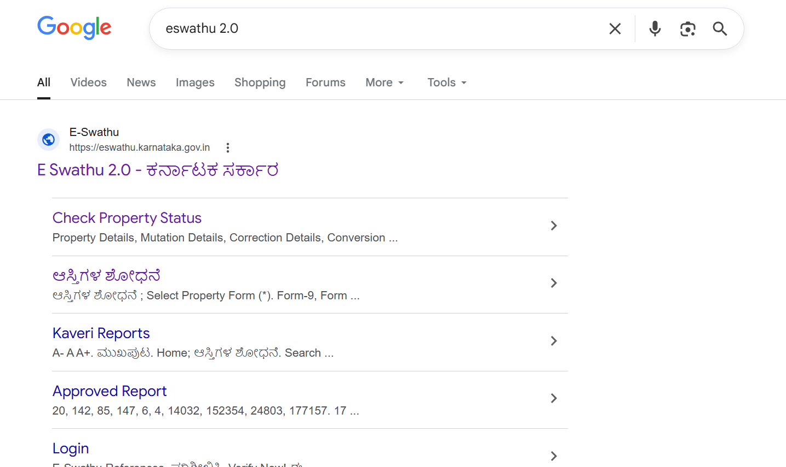
Once on the E-Swathu 2.0 homepage, click on the eKhata tile under the Citizen Services section.
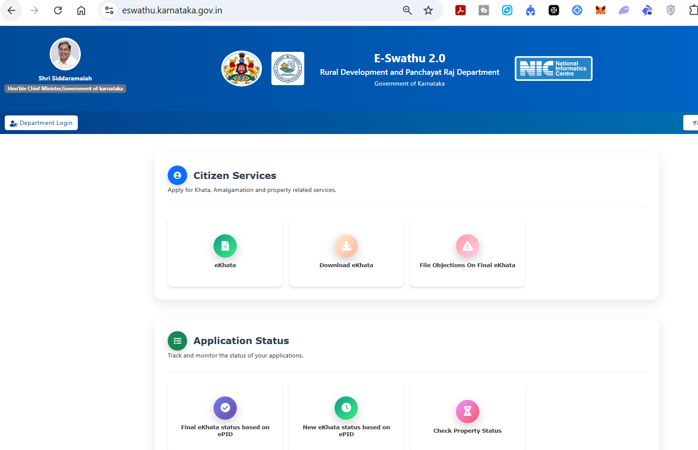
Existing Khata — for properties that already have a Khata. New Khata — for first-time applications. Select New Khata for panchayat limit properties without an existing Khata.
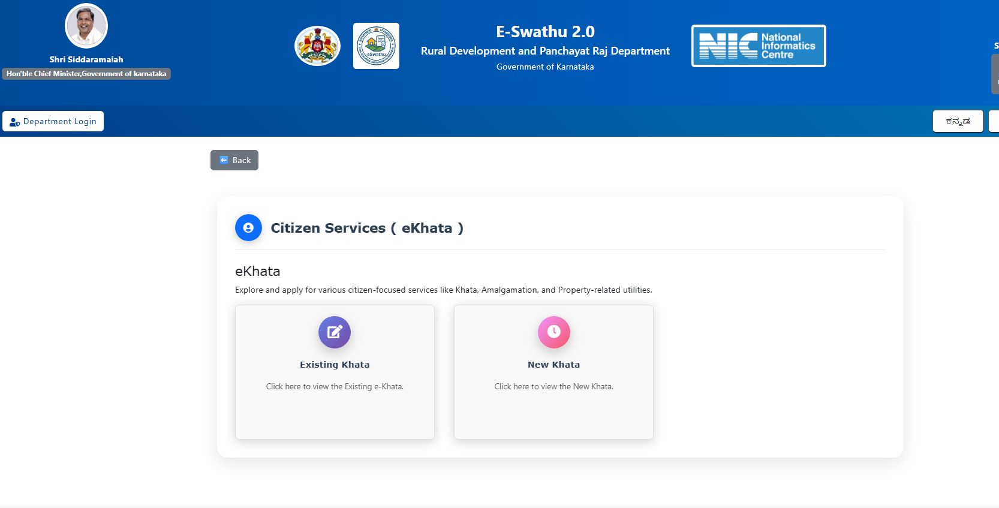
Select the Citizen option, enter your mobile number, solve the CAPTCHA, and click Send OTP. Enter the 6-digit OTP received on your mobile to complete login.
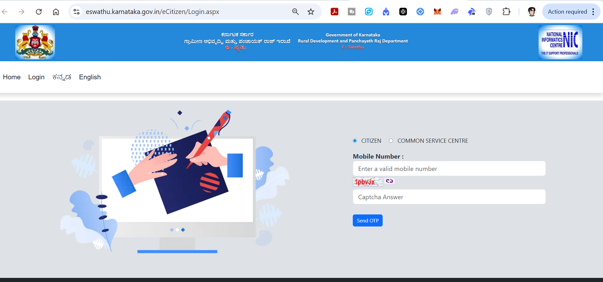
Select your property's District, Taluk, Panchayat, and Village from the dropdown menus. Click Search once all fields are filled.
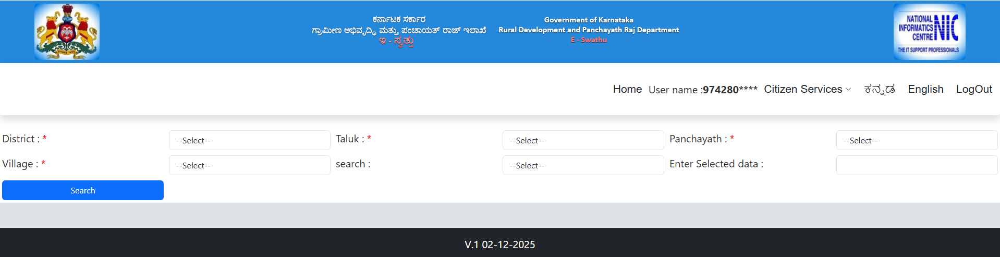
Click on the Citizen Services dropdown in the top navigation bar and select New Applications to begin a fresh eKhata application.
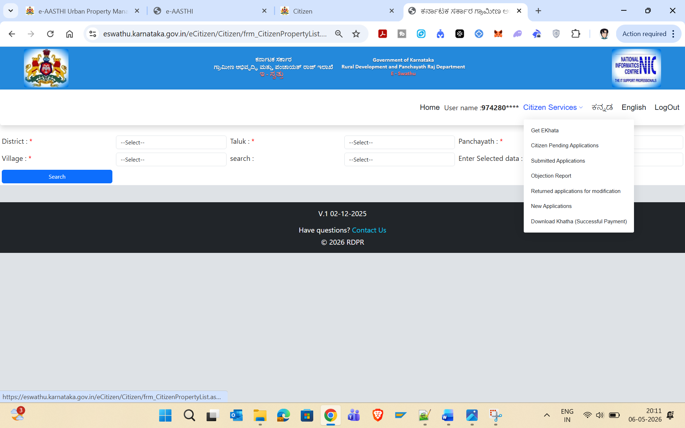
Fill in: Property Classification, Property Type, Property Category, Corner Site (Yes/No), and Acquisition Type (e.g., Sale Deed). Enter the Asset Number if available, then click Save.
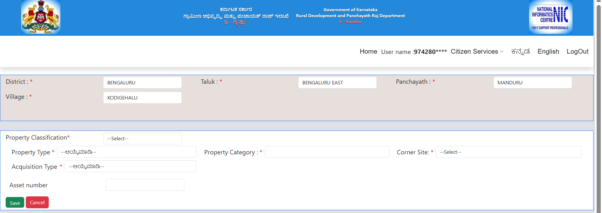
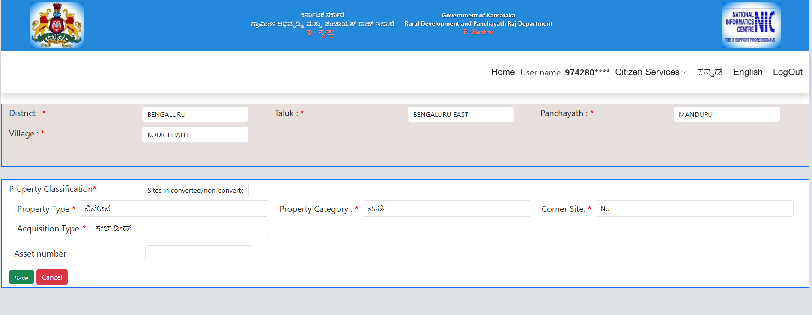
If your property was registered after 01-04-2004, select Yes and enter the Registration Number from your sale deed. Click Get Property Registration Document — the system fetches your deed details directly from the Kaveri database. Click Proceed Next.
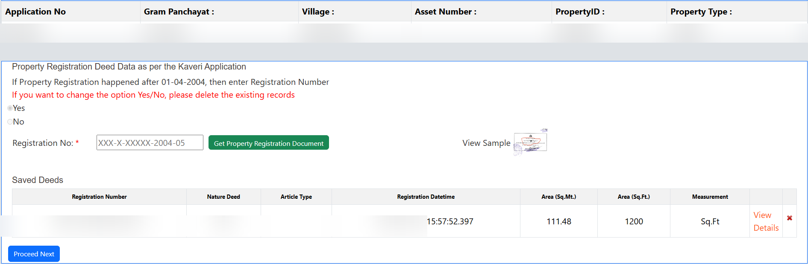
Option A: Accept the area — select if the area shown matches your deed. Option B: Object — only if you disagree, but this will be referred to the PDO causing delays. Click Proceed Next.
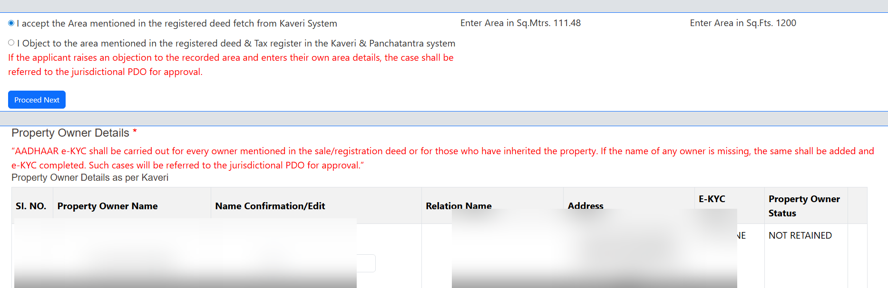
For each owner listed, click Select and complete Aadhaar e-KYC. The status will change from "NOT DONE" to "DONE" upon successful verification.
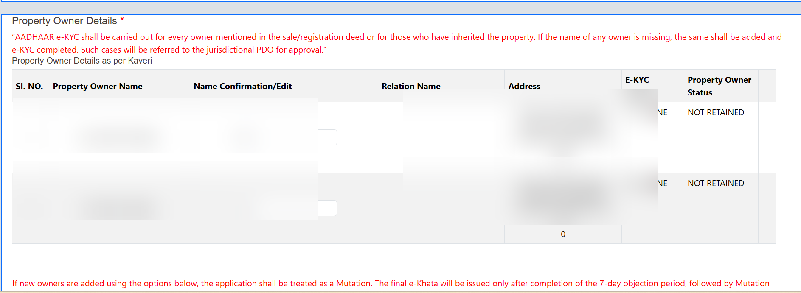
1. Rebate: Select Yes/No based on your eligibility for government property rebate schemes.
2. Tenant Details: If the property is rented out, select Yes and provide tenant info. Otherwise No. Click Proceed Next.
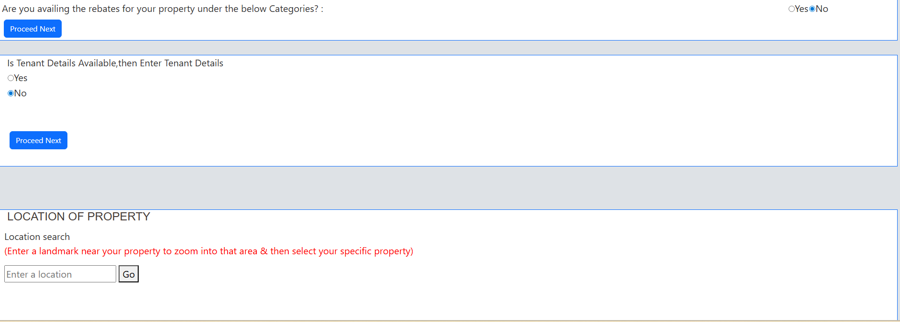
Location on Map: Enter a nearby landmark and click Go. Click the exact location of your property on the map to pin it. Latitude and longitude will be auto-filled.
Postal Address: Fill in Door/Plot Number, Building Name, Nearest Landmark, Area/Locality, Pincode, and upload a front-elevation property photo (JPG/JPEG, max 500KB). Click Proceed Next.
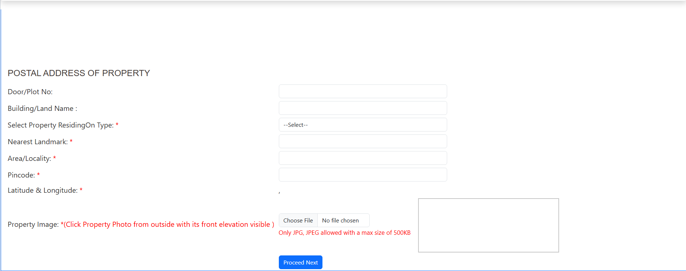
| Step | Action | Portal Section |
|---|---|---|
| 1 | Open E-Swathu 2.0 official portal | eswathu.karnataka.gov.in |
| 2 | Click eKhata under Citizen Services | Homepage |
| 3 | Select New Khata | Citizen Services (eKhata) |
| 4 | Login via OTP | /eCitizen/Login.aspx |
| 5 | Select property location | Property Search Form |
| 6 | Click New Applications | Citizen Services menu |
| 7 | Enter property classification & type | Property Details Form |
| 8 | Enter sale deed number, fetch from Kaveri | Registration Deed Section |
| 9 | Accept/object to area details | Area Confirmation |
| 10 | Complete Aadhaar e-KYC for all owners | Owner Details Section |
| 11 | Answer rebate & tenant questions | Additional Details |
| 12 | Mark location on map | Location of Property |
| 13 | Enter postal address & upload photo | Postal Address Form |
The E-Swathu 2.0 portal makes the E-Khata application completely paperless and transparent. With Aadhaar e-KYC and direct Kaveri integration, property owners in Gram Panchayat limits can get their eKhata without visiting any office.
Visit E-Swathu 2.0 Portal →